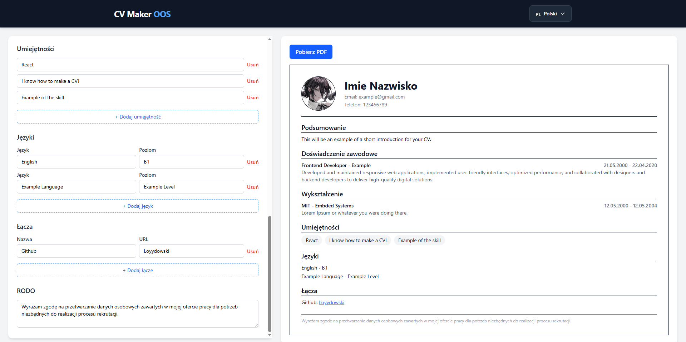

Test Solver
Otwartoźródłowa wtyczka do Chrome. Automatycznie wykrywa pytania quizowe na platformie Testportal i podpowiada poprawne odpowiedzi za pomocą modelu AI.
- Integracja z API modeli AI
- Analiza struktury DOM
- System antycheat
Frontend Developer tworzący aplikacje webowe z czystym kodem,integracją AI,których zadaniem jest rozwiązywać towarzyszące nam problemy
// Dostępny do pracy
const developer = {
name: "Bartosz Kuba",
role: "Frontend Dev",
stack: ["JavaScript", "Angular", "AI"],
readyToWork: true
};Interesuję się analizą struktury DOM, automatyzacją i narzędziami developerskimi. Szukam nowych możliwości rozwoju, zarówno we współpracy projektowej, jak i jako Junior/Mid Frontend Developer.
Aplikacje Single Page, rozszerzenia przeglądarki i narzędzia ułatwiające pracę.
Otwartoźródłowa wtyczka do Chrome. Automatycznie wykrywa pytania quizowe na platformie Testportal i podpowiada poprawne odpowiedzi za pomocą modelu AI.

Otwartoźródłowy generator CV stworzony przy użyciu React oraz TypeScript ze wsparciem html2canvas. Umożliwia stworzenie spersonalizowanego CV i wygenerowanie go bezpośrednio do pliku PDF, który można pobrać i wysłać w procesach rekrutacyjnych.